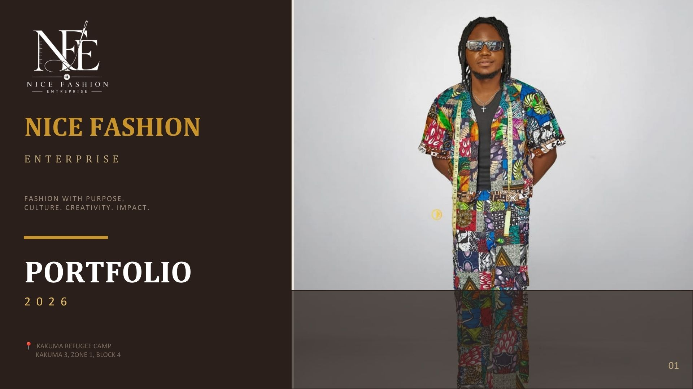

Case study · Brand identity
Nice Fashion Enterprise
A clear visual direction designed to help a growing fashion business present itself consistently and professionally.

Project overview
A more consistent public face.
Emmanuel developed visual identity direction for Nice Fashion Enterprise, giving the business a clearer foundation for presenting itself to customers.
The original problem
Growing businesses need recognizable presentation.
The work addressed the need for a professional, repeatable visual style rather than disconnected graphics.
Process
From business character to visual direction.
- Understand the business and audience.
- Explore appropriate visual cues.
- Refine a coherent identity direction.
- Prepare assets for practical use.
Final solution
A usable brand foundation.
- Visual identity direction
- Typography approach
- Colour direction
- Branded presentation assets
Tools used
Digital design workflow.
The exact software and final asset inventory have not been supplied. They should be listed after Emmanuel confirms them.
Outcome
Clearer and more professional presentation.
No customer, sales or reach figures are claimed because verified measurements and a client testimonial are not currently available.
Need a clear visual identity?
Start a project